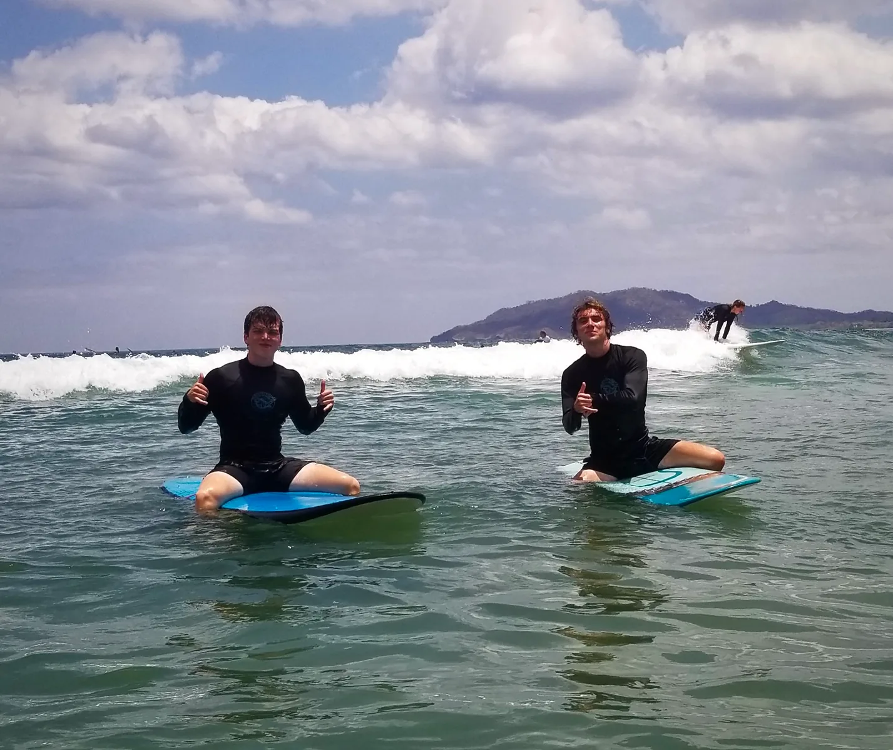
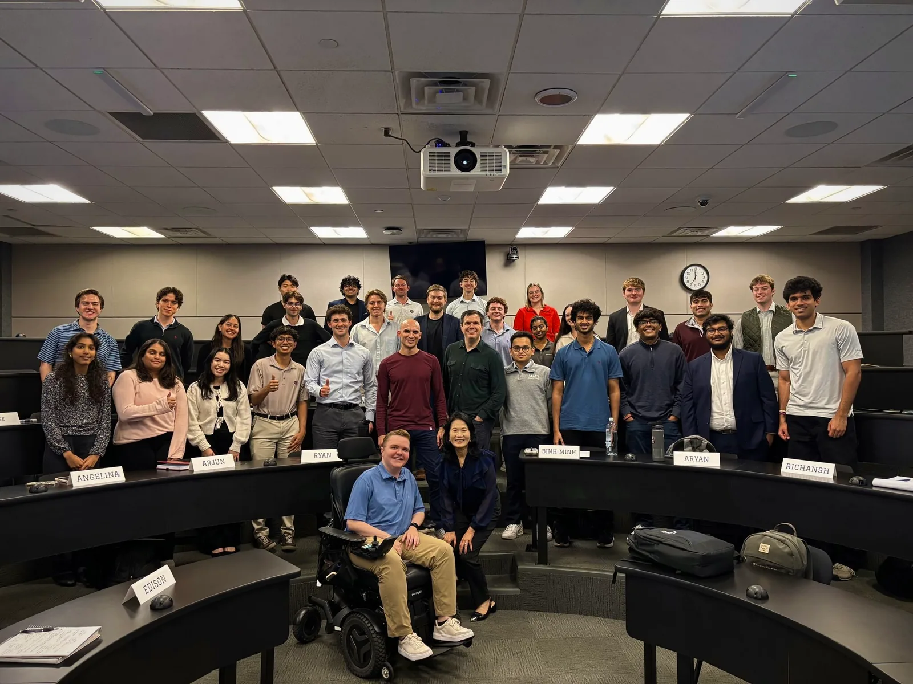
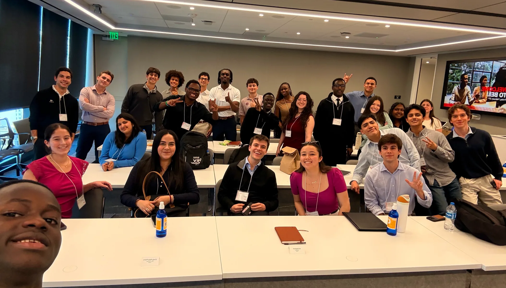
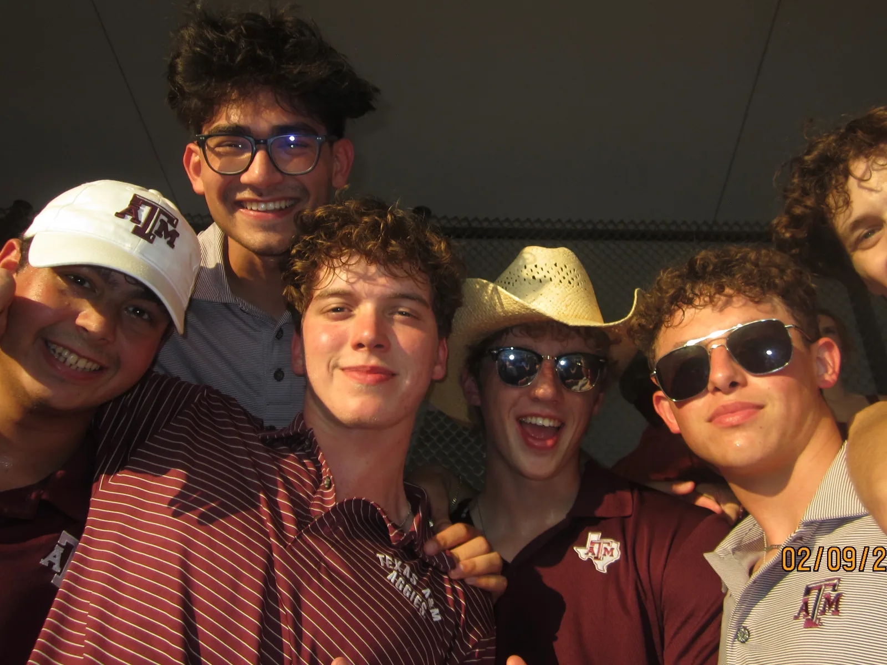
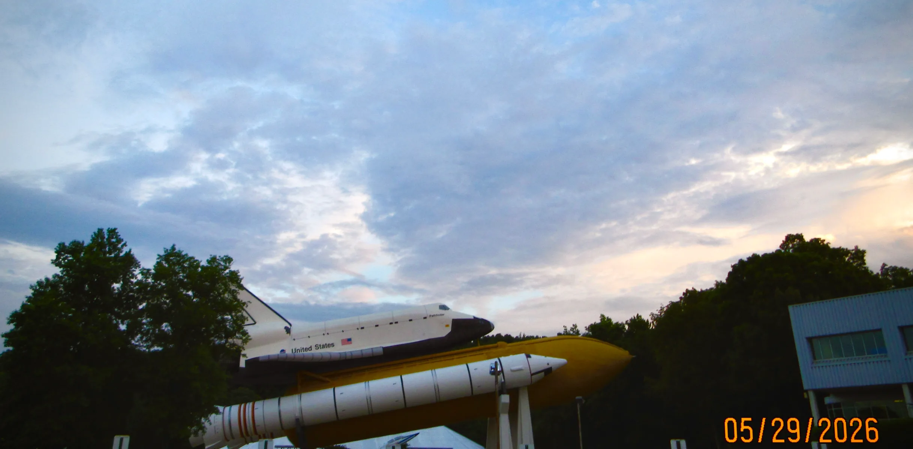
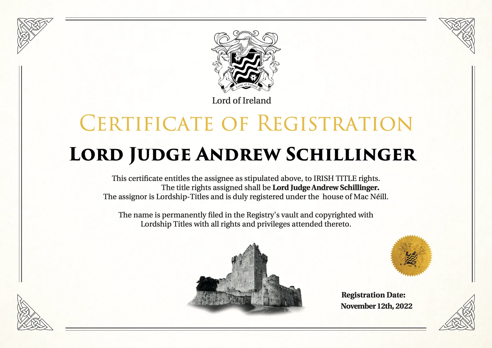

RTML: Rocket Telemetry Machine Learning
The anomaly detection platform I designed and built at NASA. The work is export controlled, so these slides show the shape of the system, not its data.


Aggie Venture Fund: the Alumni Network
The invitation-only alumni directory, board and contact manager of the Aggie Venture Fund at Mays Business School. These are the slides from my presentation of it.
About me

Just a cool picture in Costa Rica. I’m actually terrible at surfing. 
A picture of my original Aggie Venture Fund cohort. 
A picture of my Bain & Company Building Entrepreneurial Leaders cohort. 
My friends and I at our first A&M game day, freshman year. Not a huge sports guy, but I love the excitement. 
The shuttle Pathfinder! The first thing I saw on my first day at NASA. 
I’m technically a Lord in Ireland. Do with that what you will.